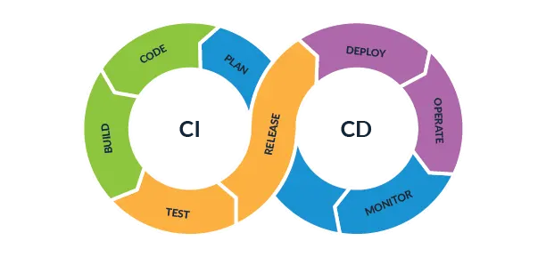

前言
CI/CD是一種經過自動化測試、編譯、單元測試等方式確保開發產品可以符合開發預期結果，CI/CD在複雜度越高的專案中呈現的作用會越大，本篇不會太詳細介紹CI/CD。
流程
Dev開發者在本地環境編寫程式碼完畢 上傳至遠端倉庫(GitLab、GitHub) 通知測試環境(git hook) 測試環境(如Docker、Linux容器)下拉專案 Ops透過整合軟體(Jenkins、Drone)設定環境配置測試參數進行測試
使用對象
- 專案開發人數超過1位以上
- 專案程式複雜度高無法透過一人掌握細節
- 專案部署目標眾多
- 親自編譯會耗費大量時間(與2相似)
且必須不是常態性更動的專案
以上，測試部分為CI，透過CI可以讓檢查流程自動化，確保功能沒有互相衝突或漏洞以達到穩定專案的開發。
CD持續交付/部署
CI測試完成後，進行持續交付流程，在持續交付的情況下確保軟體隨時都能釋出，執行部署後程式碼將會進入到生產環境，以下是CI/CD流程圖，來源取自下方連結。
更多CI/CD資料參考Implementing CI/CD Pipeline、AWS CodeBuild